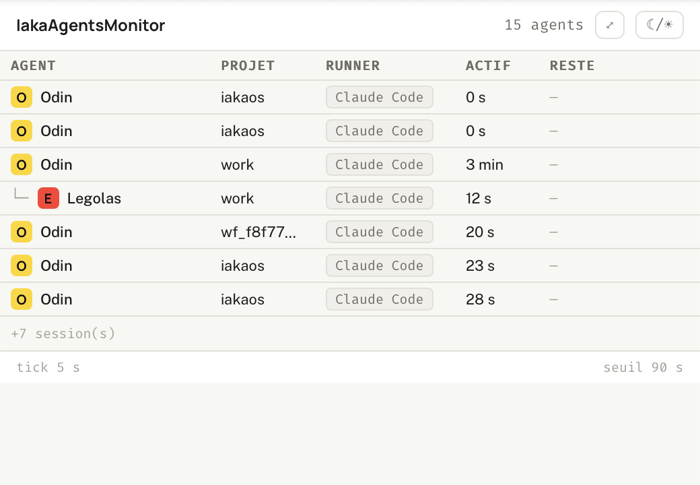

Dépôt : ~/work/IakaAgentsMonitor, branche main, HEAD e99044c (lu en lecture seule ; A6 livré aux commits 5480bab/c9e5a05, arbitrage A1 QC1-QC9 au commit 2c59fa4).

1 2 3Moniteur de barre de menus macOS qui répond à « qui travaille en ce moment, et pour qui ? » : agents Claude Code en cours, persona, projet, tâche, délégation, activité et temps restant (VÉRIFIÉ specs/PROJET.md:10-17, CLAUDE.md:22-27). Aujourd'hui autonome et en lecture seule sur ~/.claude/projects ; il doit devenir agnostique du runner en s'abonnant au bus MQTT local (PRÉVU specs/instructions/agnostique-mqtt.md:8-12).
| Élément | Détail | Statut |
|---|---|---|
| App Tauri 2 (Rust) | crate iakaagentsmonitor, v0.1.0, deps tauri (feature tray-icon), serde, serde_json — aucun client MQTT | VÉRIFIÉ src-tauri/Cargo.toml:1-22 |
| Front TS/Vite | @tauri-apps/api 2, Vite 6, TS 5.6 | VÉRIFIÉ package.json:14-21 |
| Processus | un seul binaire iakaagentsmonitor (bundle .app), tray-only (ActivationPolicy::Accessory, pas de Dock) | VÉRIFIÉ src-tauri/src/lib.rs:26-27 ; en cours d'exécution (pgrep : …/target/release/bundle/macos/IakaAgentsMonitor.app) |
| Thread watcher | thread détaché, tick 5 s | VÉRIFIÉ src-tauri/src/agents.rs:33, :1001-1019 |
| Ports | aucun port en écoute ; dev Vite sur localhost:5180 (5173 réservé à iakaTokenCounter) | VÉRIFIÉ src-tauri/tauri.conf.json:8, CLAUDE.md:34-35 ; capacités core:default seules, « aucun réseau » src-tauri/capabilities/default.json:4-6 |
| Fenêtre | label popover, 520×360, sans décoration, cachée au départ, alwaysOnTop | VÉRIFIÉ src-tauri/tauri.conf.json:13-26 |
| Identifiant | com.iakaframe.iakaagentsmonitor | VÉRIFIÉ src-tauri/tauri.conf.json:5 |
| Modules Rust | agents.rs (1799 l., lecture transcripts + arbre), claude_paths.rs, estimate.rs (cœur neutre « temps restant »), state.rs, tray.rs | VÉRIFIÉ src-tauri/src/lib.rs:5-9 |
| Provenance | agents.rs et tray.rs recopiés d'iakaTokenCounter (branche worktree-agent-a73ae73650ed5e328, commit 1c9fd0e) | VÉRIFIÉ src-tauri/src/agents.rs:6-16, src-tauri/src/tray.rs:9-11 |
run() gère AppState, construit le tray, lance le watcher (VÉRIFIÉ lib.rs:14-36).current_snapshot() lit $HOME/.claude/projects (VÉRIFIÉ claude_paths.rs:51-53, agents.rs:976-983), groupe les transcripts : <sid>.jsonl = coordinateur, <sid>/subagents/agent-<id>.jsonl = sous-agent (VÉRIFIÉ agents.rs:505-507, :480-491). 3. Par sous-agent : compagnon agent-<id>.meta.json (agentType, description, parentAgentId, spawnDepth) (VÉRIFIÉ agents.rs:152-199) ; liveness = mtime du transcript ≤ seuil IAKAAM_LIVENESS_SECS (défaut 90 s) (VÉRIFIÉ agents.rs:48-49, :619-624) ; tête du transcript lue au plus 1 Mio pour cwd, modèle et consigne (VÉRIFIÉ agents.rs:45, :627-633). 4. Arbre de délégation par parentAgentId, bornes 6 sessions / 8 enfants + marqueur « +N » (VÉRIFIÉ agents.rs:36-37, :765-790, :940-971). 5. Estimation « Reste » : estimate::resolve (ligne Durée estimée : dans les 5 premières lignes de la consigne, sinon suffixe (~…) du libellé), puis estimate_view → paliers ok (<75 % ou < borne basse) / warn / over (> borne haute) (VÉRIFIÉ estimate.rs:159, :252-263, :339-350, agents.rs:636-642, :753-763). 6. Instantané écrit dans AppState ; si changé : événement tray://agents + titre du tray = effectif (VÉRIFIÉ agents.rs:1005-1019, tray.rs:73-84). 7. Webview : instantané initial par invoke("get_running_agents"), puis écoute tray://agents ; aucun calcul métier (VÉRIFIÉ src/main.ts:11-23).
get_running_agents() → AgentsSnapshot (VÉRIFIÉ agents.rs:994-997) ; set_window_mode(compact: bool) → 520×360 ou 1000×420 + réancrage sous l'icône (VÉRIFIÉ tray.rs:21-24, :168-181). Déclarées lib.rs:19-22.
tray://agents (payload AgentsSnapshot, camelCase) (VÉRIFIÉ agents.rs:30, types miroirs src/types.ts:21-64).
set_agent_control(runner, sessionId, agentId, cmd) (pause, resume, stop) (PRÉVU agnostique-mqtt.md:530-532).
~/.claude/projects/**/*.jsonl et *.meta.json (VÉRIFIÉ ci-dessus). Aucun fichier écrit par le backend (SUPPOSÉ d'après la lecture des modules, aucun write hors tests).
localStorage clés iakaam-compact, iakaam-theme (VÉRIFIÉ src/main.ts:29, :75, index.html:13).
IAKAAM_LIVENESS_SECS (VÉRIFIÉ agents.rs:48) ; PRÉVU IAKAAM_MQTT_PORT (agnostique-mqtt.md:240-242).
npm run tauri dev|build, cargo test (VÉRIFIÉ CLAUDE.md:32-44). (VÉRIFIÉ tray.rs:30-55).
Livré : aucun. Pas de crate MQTT, pas de connexion (VÉRIFIÉ Cargo.toml:19-22 ; grep mqtt|rumqtt|1883 vide dans src/ et src-tauri/src/). Instruction « VALIDÉE (Q1–Q9 = A), pas encore réalisée » (VÉRIFIÉ agnostique-mqtt.md:4).
Prévu — lot de base (agnostique-mqtt.md) :
127.0.0.1:1883, rumqttd 0.19, MQTT v4 (3.1.1), anonyme, en mémoire, vit tant que la tray iakaTokenCounter tourne (constat du cadrage, agnostique-mqtt.md:33-34, choix Q1-A :159-165).
iaka/agents/out/<runner>/<sessionId>/<agentId> — fiche JSON retenue, QoS 1 ; payload vide retenu = fin de l'agent ; coordinateur agentId = "main" (agnostique-mqtt.md:86-94).
iaka/agents/out/+/+/+, QoS 1 (:97). Client rumqttc 0.24, hôte forcé 127.0.0.1, id iakaagentsmonitor-<pid>, reconnexion bornée 30 s (:238-242).
v, runner, runnerVersion, model, persona, agentId, parentId, sessionId, project, cwd, task, estimate, startedAt, lastSeenAt, state (running|idle) (:99-137).now - lastSeenAt > 90 s ⇒ masquée ; pas de LWT en v1 (:143-155).publishers/claude-code/iaka-agents-publish.mjs (Node, node:net), hooks SessionStart/End, UserPromptSubmit, Stop, SubagentStart/Stop, PostToolUse (battement ≤ 1/20 s) (:171-174, :315-321). Repli strict sur la lecture de fichiers si broker injoignable (Q3-A :180-184).
iaka/… disjoint de iakatokencounter/# (:92-93, :37).Prévu — amendement A1 (arbitré QC1-QC9 le 27/09, PRÉVU non livré) (agnostique-mqtt.md:442-448, arbitrage 2c59fa4 : QC3 HMAC renforcé anti-rejeu + kid, QC5 pause 10 min max puis reprise auto, QC8 choix du modèle inclus) :
iaka/agents/in/<runner>/<sessionId>/<agentId>, retenu, QoS 1 ; payload {v:1, cmd:"pause"|"stop", issuedAt, nonce, kid, sig} ≤ 512 o ; reprise = payload vide retenu (pas une commande sur le fil) (:462-477).
topic\ncmd\nissuedAt\nnonce, clé 32 o ~/.config/iaka-agents/control.key (0600, créée par l'app) ; anti-rejeu par issuedAt (:473-476, :489-492).
PreToolUse tous outils, synchrone, budget 250 ms, qui lit le retenu de son topic exact ; pause = attente, republication state:"paused" toutes les 20 s ; stop = continue:false (:481-500). state gagne paused, stopping (:456-457).
iaka/agents/out/ (:454-455).| Logiciel | Interaction | Statut |
|---|---|---|
| Claude Code | lecture de ses transcripts ~/.claude/projects | VÉRIFIÉ, livré |
| iakaTokenCounter | code recopié (agents/tray) ; port 5173 évité ; son sidecar iakahub = futur broker ; deux apps complémentaires (conso vs activité) | VÉRIFIÉ (provenance, CLAUDE.md:25-26) ; broker PRÉVU |
| iakaframe | persona/pastille : roster codé en dur aujourd'hui (9 personas, sans charon) ; prévu : lecture <cwd>/.iakaframe → frames/ → teams/ → library/personas/ (Q7-A) ; global/hooks/*.mjs = copies du kit iakaframe | VÉRIFIÉ agents.rs:88-98 ; PRÉVU agnostique-mqtt.md:214-220 ; VÉRIFIÉ global/README.md:1-12 |
| iakaboxlogs | aucune dans l'app. Les hooks du kit (global/hooks/delegation-guard.mjs:249-262, plan-courante.mjs:128-137) publient sur IAKALOG_PREFIX/<royaume>/<agent>/<conv> (défaut logs) vers IAKALOG_BROKER_URL — patron réutilisé par le publieur prévu | VÉRIFIÉ (hooks) ; lien iakaboxlogs SUPPOSÉ |
| iakaHub (Node, Discord) | aucune ; le cadrage signale l'homonyme com.naonedge.iakahub.plist ≠ broker | constat du cadrage agnostique-mqtt.md:35 |
| IakaCockpit | héritage de la convention iaka/<domaine>/{in,out} | constat agnostique-mqtt.md:92 ; pas d'échange direct |
| iakaFrameGUI, VPS | aucune trouvée | VÉRIFIÉ par absence (grep) ; plusieurs machines hors périmètre agnostique-mqtt.md:276-277 |
0 compris), infobulle « N agents en cours » (VÉRIFIÉ tray.rs:62-84).
tray.rs:101-105) : (VÉRIFIÉ index.html:24-38) ;
Agent · Projet · Runner · Modèle · Tâche · Démarré il y a · Actif il y a · Reste (VÉRIFIÉ src/render.ts:220-229) ;
├─ └─ │ + carré-lettre à la couleur de pastille + nom (VÉRIFIÉ render.ts:264-277) ;render.ts:282-287) ;render.ts:67-105) ;render.ts:236-252) ;index.html:40-43). b614f5b (maquette seule, 1 fichier) ; cadrage 5d7c2e1 + dc244c0 (VÉRIFIÉ git log, specs/instructions/liste-des-agents.md:10). Contenu : (1) largeur ajustée au contenu 480–1200 px, Tâche seule en ellipse ; (2) groupement par dépôt (ligne de séparation au nom du projet, colonne Projet retirée) ; (3) colonne État : pastille-bouton running/paused, stopping non cliquable, bouton ■ avec confirmation inline ; boutons désactivés, infobulle « commande disponible avec le bus MQTT » tant que MQTT + A1 ne sont pas livrés. À voir dans docs/maquettes/visu-agents-5-versions.html onglet V4 (VÉRIFIÉ l. 194-204, 617-663, 737-745, 767, 788). Livré dans l'app (commits 5480bab groupement par dépôt + fenêtre adaptative, c9e5a05 fusion des sessions d'un même dépôt) : render.ts a désormais le groupement par dépôt et la colonne État (VÉRIFIÉ render.ts:289-292).
(controle-agents-etude.md:4). 2. A6 validé en maquette, désormais codé (commits 5480bab/c9e5a05) dans l'app. 3. Broker iakahub non permanent (vit avec la tray iakaTokenCounter) — risque R1 ; écoute 1883 non constatée au moment de la lecture (lsof vide ce 27/09) (VÉRIFIÉ). 4. Roster codé en dur (sans charon) ; runner « Claude Code » constant dans render.ts:283. 5. Incohérence documentaire : agnostique-mqtt.md:13-14 dit estimate.rs inexistant, or il est livré (VÉRIFIÉ src-tauri/src/estimate.rs) ; CLAUDE.md:74-75 pointe l'ancien Forgejo 192.168.2.11 ; specs/etat-des-lieux.md figé à l'onboarding (26/09, commit 6460f95). 6. Sécurité : bus anonyme en clair (R7) ; la clé HMAC de A1 est lisible par tout processus du même compte (RC5). 7. Réconciliation d'identifiants hook agent_id vs fichiers agent-<id> non prouvée (R2, agnostique-mqtt.md:357-360).